GridView의 필터 설정 예제입니다. 기본 설정은 필터 사용 안함이며, 설정을 통해 다음의 필터 기능을 사용할 수 있습니다.
팝업형 필터 : 필터 설정을 팝업으로 제공하며, 확장된 필터 기능을 제공합니다.
콤보박스형 필터 : 지정한 컬럼의 중복되지 않은 데이터를 콤보박스로 표현하여 제공합니다.
[기본설정] 필터 설정 없음
팝업형 필터 설정
콤보 박스형 필터 설정
콤보 박스형 필터 + 필터 검색 설정
각 GridView의 헤더 [분류]에 있는 아이콘을 클릭하여 필터 형태를 비교합니다.
헤더에 아래와 같은 필터 아이콘이 추가됩니다.
아이콘을 클릭하면 필터 기능을 사용할 수 있는 UI가 제공됩니다.
[브라우저(Chrome) 실행 예시 - 필터 아이콘]
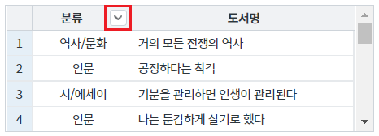
STEP1. GridView의 필터 아이콘을 클릭합니다.
STEP2. 팝업을 통해 필터 조건을 설정할 수 있습니다.
[브라우저(Chrome) 실행 예시 - 팝업형 필터 설정]
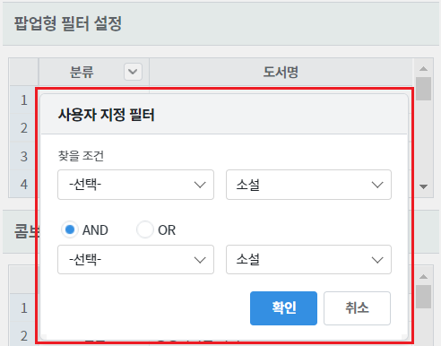
STEP1. GridView의 필터 아이콘을 클릭합니다.
STEP2. 지정한 컬럼의 중복되지 않은 데이터를 콤보 박스로 제공합니다.
[브라우저(Chrome) 실행 예시 - 콤보 박스형 필터 설정]
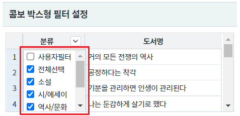
STEP1. GridView의 필터 아이콘을 클릭합니다.
STEP2. 지정한 컬럼의 중복되지 않은 데이터를 콤보 박스로 제공합니다.
더불어 필터 데이터를 입력할 수 있는 입력창이 제공됩니다.
[브라우저(Chrome) 실행 예시 - 콤보 박스형 필터 + 필터 검색 설정]
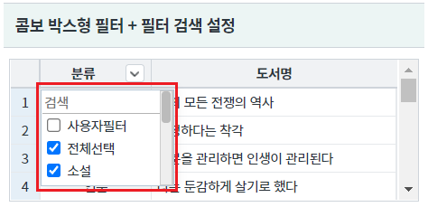
GridView와 연결된 DataList 생성 및 연결 방법은 생략되었습니다.
GridView의 헤더 [분류]의 속성을 정의합니다.
[필수] useFilter="true" //[default:false, true] 필터 사용 여부.
그림 1.웹스퀘어5 SP5 스튜디오의 Design 탭 예시 - 헤더 선택
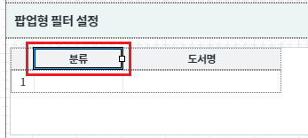
그림 2.웹스퀘어5 SP5 스튜디오의 Property View(속성창) 예시
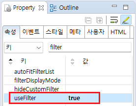
<!-- gridView 의 소스 본문 예시 --> <w2:gridView dataList="data:dlt_books_2" > <w2:header id="header1" style=""> <w2:row id="row1" style=""> <w2:column useFilter="true" value="분류" id="column2" width="100"> </w2:column> <!-- 중략 --> </w2:row> </w2:header> <!-- 중략 --> </w2:gridView>
STEP1. GridView의 속성을 정의합니다.
[필수] useFilterList="true" //[default: false, true] 필터링 대상 값을 목록으로 표시할 지의 여부
그림 3.[웹스퀘어5 SP5 스튜디오의 Property View(속성창) 예시]
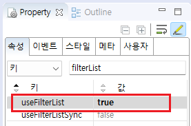
STEP2. GridView의 헤더 [분류]의 속성을 정의합니다.
[필수] useFilter="true" //[default:false, true] 필터 사용 여부.
[선택] autoFitFilterList="true" //[default: false, true] 필터 list에 있는 item 길이에 맞게 콤보 박스의 width가 조정되도록 설정. useFilterList와 useFilter 속성의 값이 "true"인 경우만 적용됩니다.
그림 4.[웹스퀘어5 SP5 스튜디오의 Design 탭 예시 - 헤더 선택]
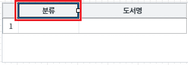
그림 5.[웹스퀘어5 SP5 스튜디오의 Property View(속성창) 예시]
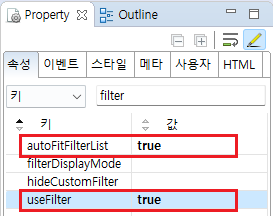
<!-- gridView 의 소스 본문 예시 --> <w2:gridView useFilterList="true" dataList="data:dlt_books_3" > <w2:header id="header1" style=""> <w2:row id="row1" style=""> <w2:column useFilter="true" autoFitFilterList="true" value="분류" id="column2" width="100"> </w2:column> <!-- 중략 --> </w2:row> </w2:header> <!-- 중략 --> </w2:gridView>
STEP1. GridView의 속성을 정의합니다.
[필수] useFilterList="true" //[default: false, true] 필터링 대상 값을 목록으로 표시할 지의 여부
[필수] useFilterSearch="true" //[default:false, true] 필터 목록에서 사용자가 입력한 값 검색 기능.
그림 6.[웹스퀘어5 SP5 스튜디오의 Property View(속성창) 예시]
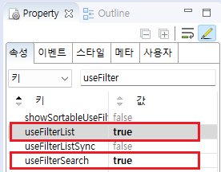
STEP2. GridView의 헤더 [분류]의 속성을 정의합니다.
[필수] useFilter="true" //[default:false, true] 필터 사용 여부.
[선택] autoFitFilterList="true" //[default: false, true] 필터 list에 있는 item 길이에 맞게 콤보 박스의 width가 조정되도록 설정. useFilterList와 useFilter 속성의 값이 "true"인 경우만 적용됩니다.
그림 7.[웹스퀘어5 SP5 스튜디오의 Design 탭 예시 - 헤더 선택]
그림 8.[웹스퀘어5 SP5 스튜디오의 Property View(속성창) 예시]
<!-- gridView 의 소스 본문 예시 --> <w2:gridView useFilterList="true" useFilterSearch="true" dataList="data:dlt_books_4" > <w2:header id="header1" style=""> <w2:row id="row1" style=""> <w2:column useFilter="true" autoFitFilterList="true" value="분류" id="column2" width="100"> </w2:column> <!-- 중략 --> </w2:row> </w2:header> <!-- 중략 --> </w2:gridView>
useFilterList
useFilterSearch
[header column] useFilter
[header column] autoFitFilterList
[웹스퀘어5 SP5 개발 가이드] GridView
링크 : https://docs1.inswave.com/sp5_user_guide/86bdcf48029b958b
[웹스퀘어5 SP5 개발 가이드] GridView 필터링
링크 : https://docs1.inswave.com/sp5_user_guide/86bdcf48029b958b#6842af3d03705a2b
[웹스퀘어5 SP5 개발 가이드] GridView 필터링 조건 표시 및 검색
링크 : https://docs1.inswave.com/sp5_user_guide/86bdcf48029b958b#358be4b447d32e75
GridView 필터링 조건 표시 및 검색
링크 : https://youtu.be/VPx1BHrDEjc
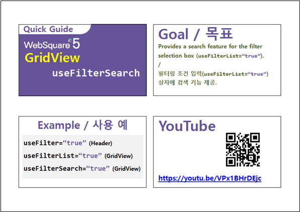